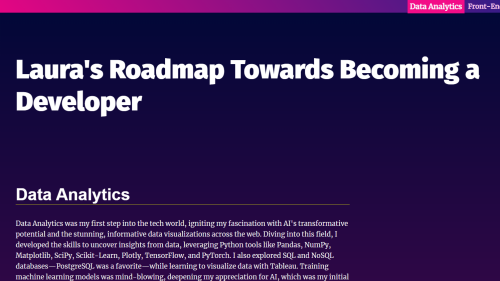
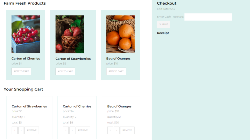
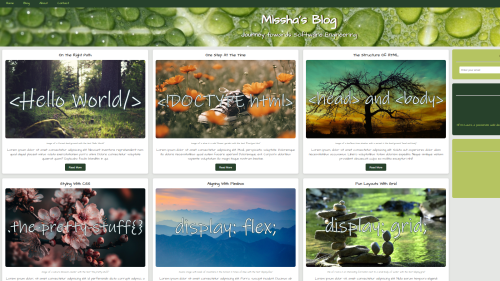
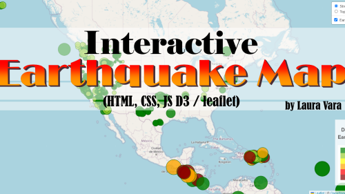
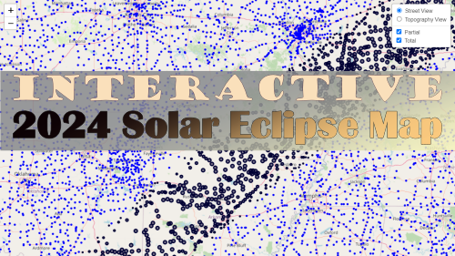

With a diverse background spanning over a decade in content creation, design, and customer engagement, I have honed my skills in communication, creativity, and problem-solving. Transitioning into tech, I’ve applied my expertise to data analytics and front-end development, contributing to impactful projects like interactive web maps and data visualizations. As I continue my journey, my ultimate goal is to become a Software Developer specializing in Entertainment and Video Games. I’m passionate about creating engaging and immersive experiences that captivate users and bring stories to life. If you're exploring web development, data analytics, or share my passion for art, video game and technology, check out my GitHub or connect with me on LinkedIn.
To learn more about my work history, check out my downloadable resume. Thanks for stopping by!
Profile
I’ve been diving into the tech industry through hands-on certifications and collaborative projects, blending creativity and technical expertise to build visually appealing and user-friendly designs. My journey began with a deep interest in data analytics, sparking my passion for AI and web development, which I’ve honed by creating interactive visualizations and immersive designs. Drawing from my background in marketing, PR, and design, I approach challenges with a user-centric and creative perspective. I’m now on a path to becoming a Software Developer, with a focus on the entertainment and video game industries, where I can combine my love for storytelling, design, and technology.
Back to homepageProjects
View selected projects below. More information can be found at My Github Repo.
Landing Page - My Developer Roadmap
Landing page project to showcase different skills learned during the Front End Web Developer Nanodegree by Udacity. It also works as a way to showcase my tech journey and goals
Shopping Cart
Shopping Cart project to showcase different skills learned during the Front End Web Developer Nanodegree by Udacity.
Blog Mockup
Blog project to showcase different skills learned during the Front End Web Developer Nanodegree by Udacity.
Interactive Earthquake Map - Leaflet
Leaflet project to showcase different skills learned during the Data Analytics Bootcamp by Denver University. Some of which included a bit of HTML, CSS, and JavaScript with the use of APIs
Interactive 2024 Solar Eclipse Map - Leaflet
Collaborative leaflet project to showcase different skills learned during the Data Analytics Bootcamp by Denver University. My part on this project was the Interactive map by using JavaScript and Leaflet. The cool thing about this interactive map, aside of the toggling options, is the fact that the markers for the Total Eclipse section reference the duration of the event, by the size of the marker, thus reflecting a pattern. I also created the Pie Chart.
Work Experience
My complete work history is available on LinkedIn.
Bilingual Customer Service Rep
Van Gogh School Photographers
Sept 2024 - Present
Education
Name of School - Location
Name of Certificate - Certificate, YYYY
Description and i.e. of what was covered: covering HTML, CSS, Flash, Photoshop, PHP and JavaScript.
Name of School - Location
Name of Certificate - Certificate, YYYY
Description and i.e. of what was covered: covering HTML, CSS, Flash, Photoshop, PHP and JavaScript.
Name of School - Location
Name of Certificate - Certificate, YYYY
Description and i.e. of what was covered: covering HTML, CSS, Flash, Photoshop, PHP and JavaScript.